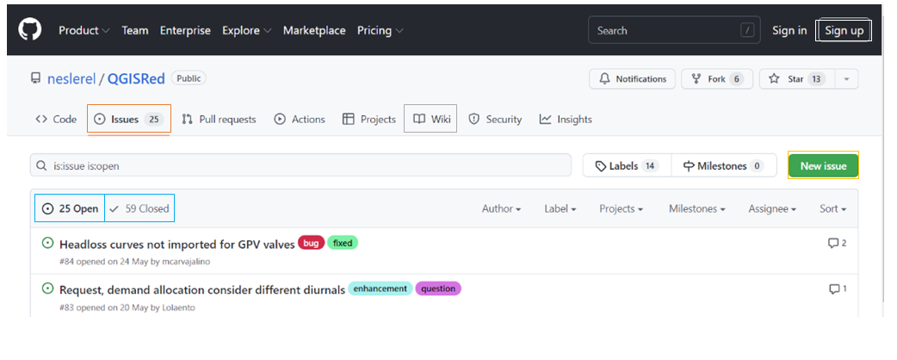
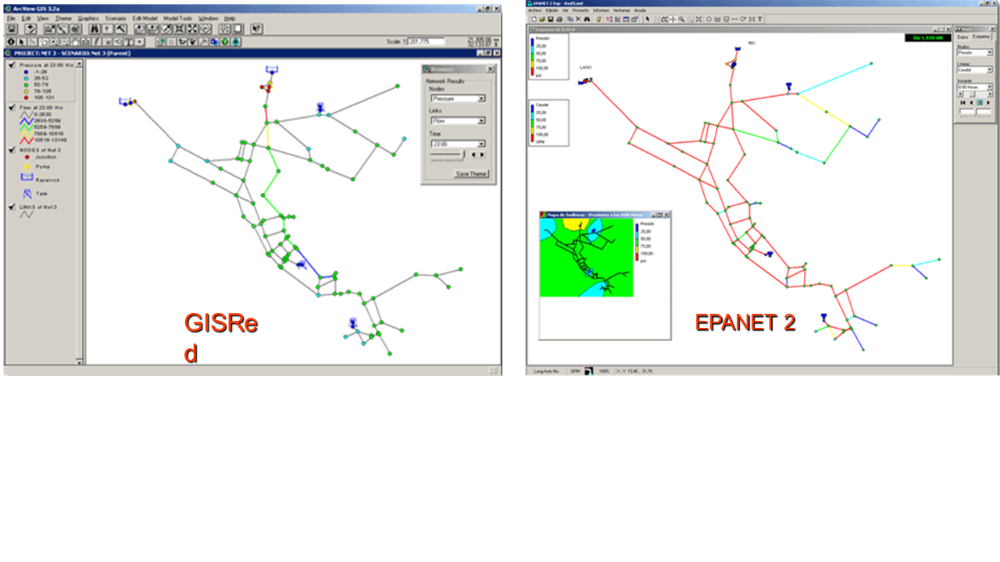
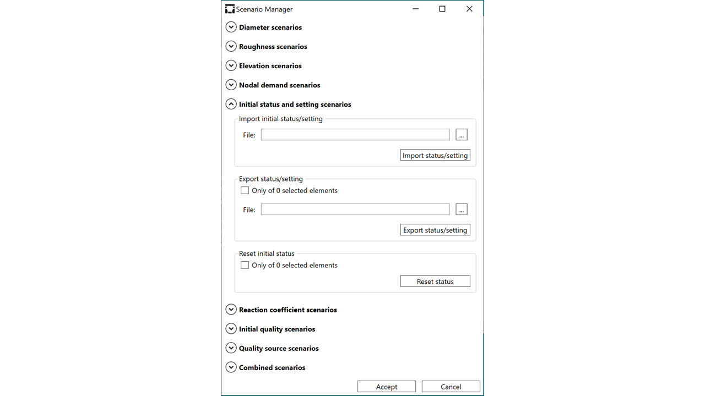
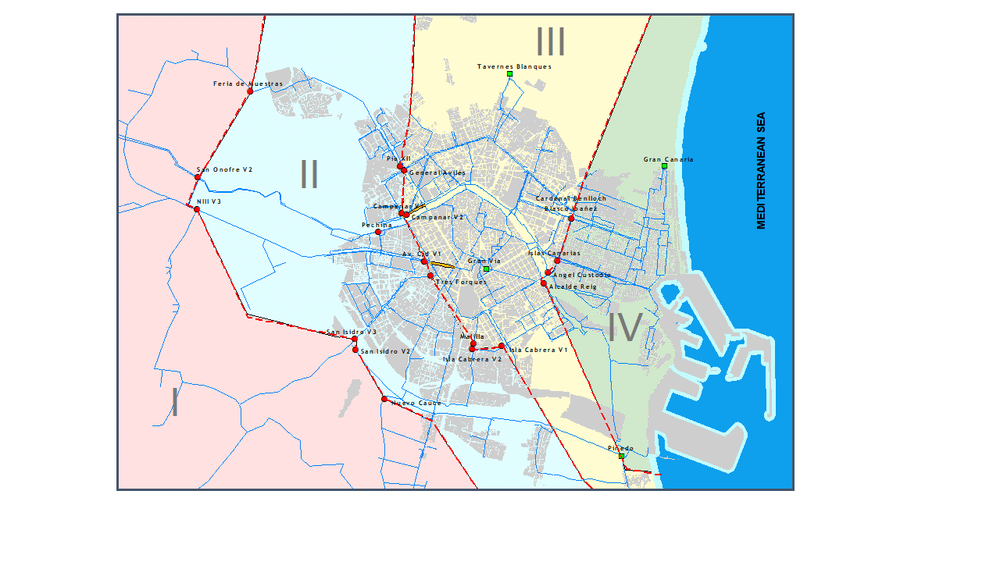

Novedades
Las últimas versiones publicadas de QGISRed

Febrero 2026
Novedades versión 0.17 Última
Nueva herramienta de segmentos aislados, identificación de 13 estados, encadenamiento de simulaciones, gestión de escenarios EPANET e integración del Toolkit 2.3.
Ver novedades →
2022
Novedades versión 0.16
Mejoras en edición gráfica, propiedades y análisis. Consulta el detalle completo de todos los cambios incluidos en esta versión.
Ver novedades →Capacidades Destacadas
Las funcionalidades más potentes y diferenciales de QGISRed, explicadas en detalle

Válvulas de corte en el Gemelo Digital
Incorporación de las válvulas de corte al modelo para analizar cómo se ven afectados los flujos al seccionar la red, de forma permanente o temporal.
Ver detalle →
Opciones de análisis EPANET 2.2
Soporte a las demandas dependientes de la presión (PDA) frente a la opción clásica de demandas fijas (DDA), acercando el modelo a la realidad del sistema.
Ver detalle →
Asignación de demandas por sectores
Asistente para asignar automáticamente demandas a los nudos desde puntos de consumo y datos sectoriales, imprescindible en redes con gran número de nudos.
Ver detalle →
Editor de Propiedades mejorado
Navegación fluida entre elementos vinculados, edición sin necesidad de seleccionar previamente la capa correspondiente.
Ver detalle →
Estado de elementos y simbolización
Nueva herramienta para cambiar el estado de tuberías, bombas y válvulas, con simbolización gráfica según el estado de cada elemento.
Ver detalle →
Identificación de segmentos aislados
Determina automáticamente qué válvulas hay que cerrar para aislar cualquier segmento de la red, esencial para la gestión operativa.
Ver detalle →Prestaciones Actuales
QGISRed lleva más de cuatro años de desarrollo continuo. Estas son sus principales funcionalidades.
Gestión de Proyecto
- Gestor de proyectos para carga y almacenamiento
- Creación automática de proyecto vacío o desde fichero INP
- Clonación de proyectos y copia de seguridad
- Gestión de los datos del proyecto y metadatos
- Gestión de capas del modelo y declaración de opciones
Herramientas de Edición Gráfica
- Creación automática de nudos al trazar tuberías
- Creación automática de relaciones topológicas
- Inserción de válvulas y bombas como elementos lineales o en nudos
- Creación, borrado, desplazamiento y edición del trazado
- Inversión automática del trazado
- Cambio de estado de tuberías, bombas y válvulas
Edición de Propiedades
- Ventanas específicas para editar propiedades de cada elemento
- Buscador de elementos por tipo e identificativo
- Navegador para visitar elementos vinculados
- Selección múltiple de elementos por regiones
- Tratamiento de demandas múltiples como capa independiente
- Reconocimiento de emisores y fuentes contaminantes
Asistentes para Completar Datos
- Recálculo automático de longitudes por SRC
- Interpolación automática de elevación desde MDT
- Estimación y conversión de rugosidad de tuberías
- Asignación automática de demanda desde datos sectoriales
- Asignación de curvas de modulación
- Editores de patrones, curvas y leyes de control
Importación y Exportación
- Importación desde ficheros INP de EPANET
- Exportación a ficheros INP
- Importación desde capas GIS (SHP, GPKG)
- Exportación de resultados a capas GIS
- Importación desde bases de datos corporativas GIS
Verificación y Depuración
- Verificación de la topología de la red
- Detección de elementos desconectados
- Identificación de tuberías duplicadas
- Comprobación de la completitud de los datos
- Informe de errores y advertencias
Gestión de Escenarios
- Constructor de escenarios
- Gestor de proyectos multi-escenario
- Compatibilidad con escenarios exportados de EPANET
- Encadenamiento de simulaciones sucesivas
Visualización de Resultados
- Representación de resultados en capas GIS
- Identificación de hasta 13 estados en tuberías, bombas y válvulas
- Visualización de resultados en período extendido (animación)
- Exportación de resultados a tablas y gráficas
Extensiones para Gemelo Digital
- Incorporación de válvulas de corte al modelo
- Identificación de segmentos aislados
- Soporte a demandas dependientes de la presión (PDA)
- Conexión con datos de campo y SCADA
Utilidades de Exploración
- Resumen estadístico de la red
- Localización rápida de elementos por ID
- Análisis de conectividad y trazabilidad
- Comparación entre escenarios
Próximas Prestaciones
Funcionalidades en desarrollo que se incorporarán en próximas versiones
Versión para Linux y macOS Próximamente
Extensión de la compatibilidad del plugin a sistemas operativos Linux y macOS, actualmente limitada a Windows.
Calibración automática Próximamente
Herramientas de calibración automática del modelo hidráulico a partir de medidas de campo.
Conexión en tiempo real Próximamente
Integración directa con sistemas SCADA para actualización continua del modelo y simulación en tiempo real.
Histórico de Versiones
v0.17 Incompatibilidades QGIS 3.44, Toolkit EPANET 2.3 Febrero 2026
- Resueltas incompatibilidades con QGIS hasta la versión 3.44
- Nueva herramienta para la identificación de segmentos aislados
- Identificación de hasta 13 estados en tuberías, bombas y válvulas
- Encadenamiento de simulaciones sucesivas
- Gestión de escenarios compatibles con EPANET
- Nuevas opciones del Gestor de Proyectos
- Integración de la versión 2.3 del Toolkit de EPANET
- Pequeñas mejoras y depuración de errores
v0.16 Mejoras en edición y análisis 2022
- Mejoras en edición gráfica de la red
- Nuevas opciones en el editor de propiedades
- Mejoras en la visualización de resultados
- Corrección de errores y optimizaciones generales
v0.15 Demandas PDA y válvulas de corte 2022
- Soporte a demandas dependientes de la presión (PDA)
- Incorporación de válvulas de corte al modelo
- Mejoras en la importación desde bases de datos GIS
v0.14 Asignación de demandas desde puntos de consumo 2021
- Asistente para asignación de demandas por sectores y desde puntos de consumo
- Mejoras en la navegación desde el editor de propiedades
- Nuevas herramientas de verificación topológica
v0.13 Mejoras en edición de propiedades 2021
- Nuevas opciones en el editor de propiedades
- Herramienta para cambio de estado y simbolización según estado
- Mejoras en la exportación de resultados
v0.12 Análisis de calidad del agua 2020
- Soporte a análisis de calidad del agua
- Tratamiento de fuentes contaminantes como capa independiente
- Mejoras en la importación de ficheros INP
v0.11 Integración EPANET 2.2 2020
- Integración del Toolkit de EPANET 2.2
- Soporte a nuevas opciones de análisis de EPANET 2.2
- Mejoras en la visualización de resultados en período extendido
v0.10 Gestor de proyectos 2020
- Nuevo gestor de proyectos multi-escenario
- Mejoras en la importación desde bases de datos GIS corporativas
- Constructor de escenarios
v0.6 – v0.9 Edición avanzada y asistentes 2019 – 2020
- Asistentes para completar datos del modelo (elevaciones, rugosidades, demandas)
- Interpolación de elevaciones desde MDT
- Mejoras en las herramientas de edición gráfica
- Primeras herramientas de verificación y depuración
v0.1 – v0.5 Versiones iniciales 2018 – 2019
- Primera presentación pública en la Conferencia CCWI 2019, Exeter (UK)
- Importación y exportación básica de ficheros INP
- Herramientas básicas de edición gráfica de la red
- Editor de propiedades inicial
- Simulación hidráulica con EPANET 2.0